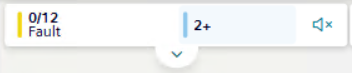
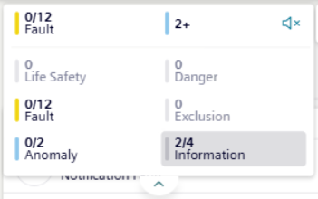

Use Summary Bar in Mobile Flex
In Flex mobile view, the Summary bar length is reduced to display only the following:
- The first lamp with events of the highest severity. For example,
Life Safety. - A summary lamp indicating the total number of hidden lamps with events. The category color corresponds to the second lamp with events of the highest severity.

For instructions on how to work with Summary bar, see:
- Control the Buzzer Sound.
- Show All the Event Lamps (below).
- Filter by Category with Event Lamps
For additional reference, see Flex Client web/desktop app Summary Bar and Event Lamps.
Show All the Event Lamps
- In the Summary bar, do one of the following:
- Tap the summary lamp.
- Tap .

- Tap again the summary lamp or to hide the event lamps.